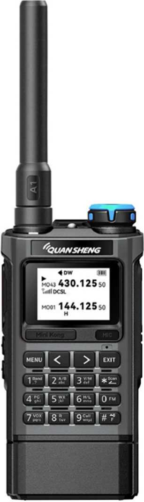
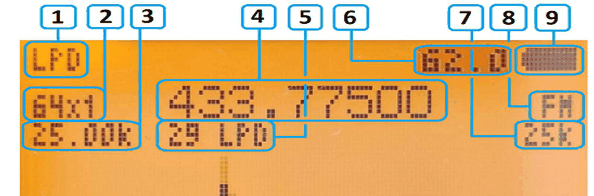

Karina ergänzt Ihr vorhandenes Funkgerät um einen Spektrumanalysator, FM-Rundfunkempfang, flexiblen Suchlauf und ein überarbeitetes Menü. Kostenlos, offene Lizenz, ohne Konten.
Neueste Version auf GitHub
Aus dem Englischen übersetzt. Die englische Seite ist die maßgebliche Fassung.

Firmware, die für eine Hardware-Version gebaut wurde, macht eine andere unbrauchbar. Prüfen Sie, welches Funkgerät Sie haben, und sichern Sie zuerst Ihre Kalibrierung — sie ist einmalig für Ihr Gerät und niemand kann sie Ihnen zurückgeben.
Schalten Sie das Funkgerät aus, halten Sie PTT gedrückt und schalten Sie es ein: Das Display zeigt die Bootloader-Version. Deren erste Ziffer nennt Ihnen die Hardware-Version.
| Bootloader beginnt mit | Funkgerät | Karina-Build |
|---|---|---|
| 2, 3, 4, 5 | UV-K5 V1 | karina-v1 (eigenes Repository) |
| 1 | UV-K5 V2 | nicht unterstützt |
| 7 | UV-K5 V3, UV-K1, UV-K1(8) | dieses Repository |
V1-Geräte tragen keine Kennzeichnung; V2 und V3 haben meist eine auf dem Aufkleber unter dem Akku.
Sie haben noch ein UV-K5 V1? Dafür gibt es eine eigene Firmware in einem separaten Repository: autumn1rain/karina-v1
Bandvorgaben, freie Frequenzeingabe, Live-Mitschnitt der aktiven Frequenz, eine Sperrliste für verrauschte Kanäle sowie Einstellungen für Dämpfungsglied, AGC und Rauschsperre.
Suchlisten, Prioritätskanäle, die während des Suchlaufs geprüft werden, und jeder Kanal lässt sich im laufenden Betrieb überspringen, indem Sie sein Dämpfungsglied einschalten.
Suchen Sie CTCSS/DCS-Töne auf der aktuellen Frequenz und speichern Sie den gefundenen Ton als Sende-Subton.
Sendersuche mit Speicherplätzen, die fünf Sekunden nach dem Verschwinden eines Signals auf dem Arbeitskanal automatisch fortgesetzt wird.
ATT1, ATT2 und ATT3 je Frequenz oder Kanal — nützlich neben einem starken Sender und zum Überspringen von Kanälen während des Suchlaufs.
Sendeleistung HIGH / MID / LOW, ein überarbeiteter Akkusparmodus, dynamische Lautstärke, ein Frequenz- und Leistungs-Randomizer, NOAA sowie AM- und USB-Modulation.

Die Kurzfassung. Das vollständige Verfahren mit Screenshots steht in der Installationsanleitung weiter unten.
| Werkzeug | Plattform | Datei |
|---|---|---|
| UV Studio | web (Chrome, Edge, Opera, Brave) | siehe Werkzeug |
| Offizielles Quansheng-Update-Programm | Windows | *.packed.bin |
| k5prog | Linux, macOS | *.bin |
| uvtools | web (Chrome, Edge) | siehe Werkzeug |
| K5K1 Prog | macOS | *.bin oder *.packed.bin |
Prüfen Sie vor dem Start, ob Ihr Werkzeug Ihr Funkgerät unterstützt. Sie tun dies auf eigene Gefahr.
Die Installationsanleitung behandelt das Flashen und CHIRP; das Handbuch beschreibt jeden Menüpunkt und jede Taste.
| Online | Russisch (Original) | Englisch | |
|---|---|---|---|
| Installationsanleitung und CHIRP | Lesen | ||
| Firmware-Handbuch | Lesen |
Nein. Das V1 hat einen anderen Prozessor und einen anderen Bootloader; die falsche Firmware macht das Funkgerät unbrauchbar. Besitzer eines V1 brauchen den Build karina-v1.
Ja. Die Kalibrierung enthält die Sendeleistungs- und Akkudaten Ihres eigenen Funkgeräts. Sie liegt keinem Release bei und niemand kann sie für Sie wiederherstellen.
Nein. Nur eine Konfiguration, die aus einer früheren Karina-Version gesichert wurde, lässt sich zurückschreiben. Kanäle können Sie mit CHIRP übernehmen.
Das passiert, wenn eine Seitentaste auf NONE steht. Belegen Sie vor dem Schreiben alle vier Seitentasten-Funktionen (kurzer und langer Druck für beide Tasten).
Im Telegram-Chat, in den Kommentaren. Bitte nennen Sie dabei Ihr Funkgerät und Ihre Firmware-Version.